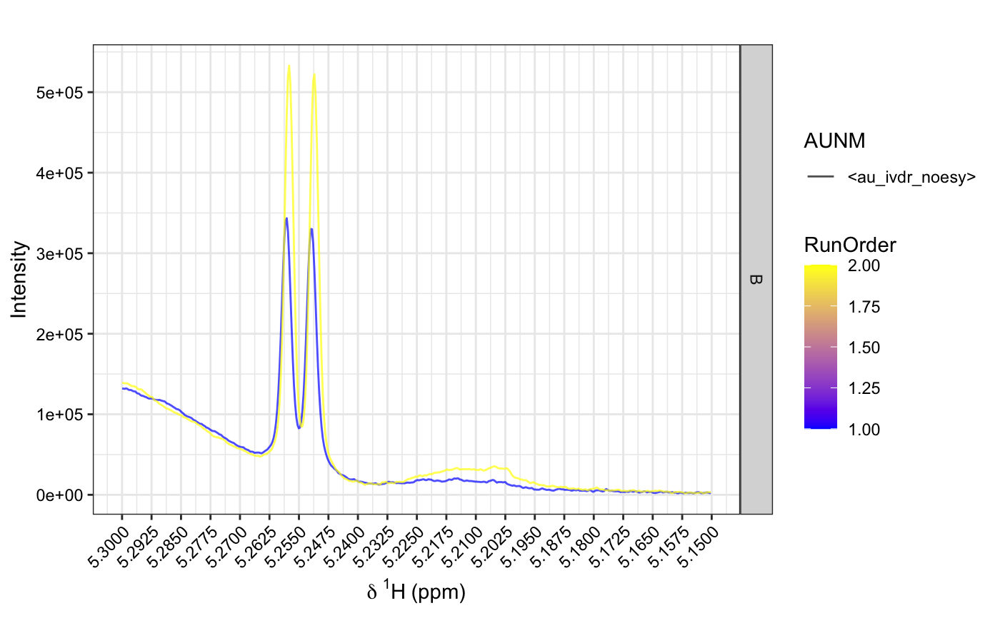

specOverlay.RdPlotting overlayed NMR specra. This function is based on ggplot2, a high-level plotting R package. For large ppm ranges the computation time is relatively long, so the chemical shift range should be as small as possible. For list argument an, the first element describes the colour and must be defined (even if it is only a single value). If colour and line width are specified, then at least one list elements of an must have the same length as X.
specOverlay( X, ppm = NULL, shift = c(-0.01, 0.01), an = list("facet", "col", "ltype"), alp = 0.7, size = 0.5, title = "", ... )
| X | Input NMR data matrix with row representing spectra. |
|---|---|
| ppm | ppm vector with its length equals to |
| shift | Chemical shift area to be plotted. This should be kept as small as possible (see Details). |
| an | List with one to three elements specifying facetting, colour and linetype (see Details). |
| alp | Alpha value for lines (number between 0 and 1 whereas 0 is fully transparent and 1 is fully opaque). |
| size | Line width (0.5 is a good start). |
| title | Plot title. |
| ... | Additional paramters passed on to ggplot's facet function. |
ggplot2 plot object
NA
torben.kimhofer@murdoch.edu.au
data(covid) panel=sample(c('A', 'B'), nrow(X), replace = TRUE) specOverlay(X, shift=c(5.15, 4.6), an=list(panel, Date=meta$a_DATE, AUNM=meta$a_AUNM))#> Error in seq.default(shift[1], shift[2], by = abs(diff(shift))/20): wrong sign in 'by' argumentspecOverlay(X, shift=c(5.15, 5.3), an=list(panel, RunOrder=as.numeric(meta$a_DATE), AUNM=meta$a_AUNM))#> Warning: NAs introduced by coercion